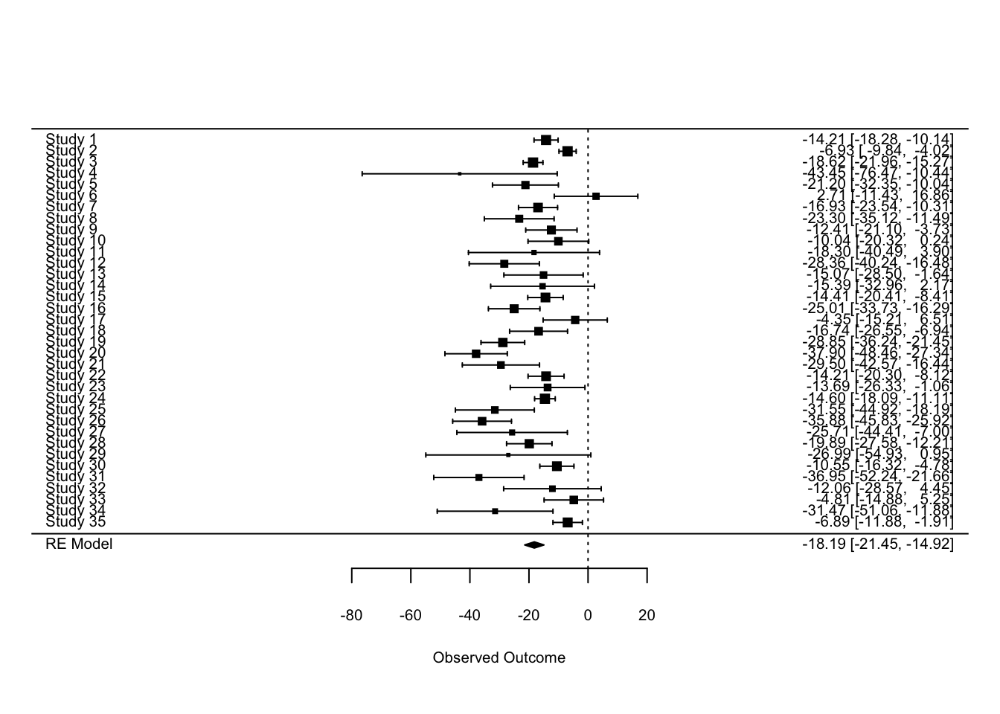

library(r4pde)
wm <- WhiteMoldSoybean17 Statistical models
17.1 Example data
We will continue using the same data on white mold epidemics in soybean seen in previous chapter.
First, let’s work with data from a single trial (trial 1).
library(tidyverse)
wm1 <- wm |>
dplyr::select(study, inc, yld) |>
filter(study %in% c(1))
head(wm1, 13)# A tibble: 13 × 3
study inc yld
<dbl> <dbl> <dbl>
1 1 76 2265
2 1 53 2618
3 1 42 2554
4 1 37 2632
5 1 29 2820
6 1 42 2799
7 1 55 2503
8 1 40 2967
9 1 26 2965
10 1 18 3088
11 1 27 3044
12 1 28 2925
13 1 36 286717.2 Linear regression
Assuming a linear relationship between the variables, we can employ a linear regression model. From this model, the intercept provides an indication of the attainable yield (the yield when there is no disease). Conversely, the slope represents the rate at which the yield decreases for every one percentage point increase in disease incidence.
lm1 <- lm(yld ~ inc, data = wm1)
jtools::summ(lm1)| Observations | 13 |
| Dependent variable | yld |
| Type | OLS linear regression |
| F(1,11) | 46.86 |
| R² | 0.81 |
| Adj. R² | 0.79 |
| Est. | S.E. | t val. | p | |
|---|---|---|---|---|
| (Intercept) | 3329.14 | 86.84 | 38.33 | 0.00 |
| inc | -14.21 | 2.08 | -6.85 | 0.00 |
| Standard errors: OLS |
The model explains a statistically significant and substantial proportion of variance (R2 = 0.81, F(1, 11) = 46.86, p < .001, adj. R2 = 0.79). The model’s intercept, corresponding to inc = 0, is at 3329.14 (95% CI [3138.00, 3520.28], t(11) = 38.33, p < .001). The effect of inc is statistically significant and negative (beta = -14.21, 95% CI [-18.78, -9.64], t(11) = -6.85, p < .001; Std. beta = -0.90, 95% CI [-1.19, -0.61]). In other words, 14.21 kg is lost for each unitary increase in incidence, given the attainable yield of 3,329.14 kg.
17.3 Damage coefficients
Damage curves offer a visual representation of how various factors, in this case plant diseases, can impact a given system. When we want to normalize these effects to better compare across different systems or conditions, it’s useful to express these curves in relative terms rather than absolute ones. To achieve this, we can adjust the derived slope by dividing it by the intercept. This step essentially scales the rate of damage in relation to the baseline or the starting point (when there’s no damage). By subsequently multiplying the result by 100, we convert this value into a percentage. This percentage is termed the “relative damage coefficient”. What makes this coefficient particularly useful is its ability to standardize the measurement of damage, facilitating comparisons across diverse pathosystems.
Two plots can be used, one that shows the effect of the disease on the relative yield and the other that shows the effect on yield loss (which in this case represents a positive slope). Both representations can be found in the literature.
dc <- (lm1$coefficients[2]/lm1$coefficients[1])*100
dc inc
-0.426775 # Plot for the relative damage curve
x = seq(0,100,0.1)
y = seq(0,100,0.1)
dat <- data.frame(x,y)
p1 <- dat |>
ggplot(aes(x,y))+
theme_r4pde(font_size = 14)+
geom_point(color = "NA")+
scale_y_continuous(expand = c(0,0))+
scale_x_continuous(expand = c(0,0))+
geom_abline(aes(intercept = 100, slope = dc))+
labs(x = "Incidence (%)", y = "Yield (%)")+
annotate(geom = "text", x = 60, y = 60, label = "DC = -0.42")
p1 
# Plot for the relative yield decrease
dc2 <- (-lm1$coefficients[2]/lm1$coefficients[1])*100
dc2 inc
0.426775 dat <- data.frame(x,y)
p2 <- dat |>
ggplot(aes(x,y))+
theme_r4pde(font_size = 14)+
geom_point(color = "NA")+
scale_y_continuous(expand = c(0,0))+
scale_x_continuous(expand = c(0,0))+
geom_abline(aes(intercept = 0, slope = dc2))+
labs(x = "Incidence (%)", y = "Yield loss (%)")+
annotate(geom = "text", x = 60, y = 60, label = "DC = 0.42")
p2 
17.4 Multiple trials
17.4.1 Introduction
When managing data sourced from multiple trials, a naive and straightforward approach is to pool all the data and fit a “global” linear regression. This tactic, while efficient, operates under the assumption that the different trials share common underlying characteristics, which might not always be the case.
Another simplistic methodology entails running independent linear regressions for each trial and subsequently averaging the intercepts and slopes. While this provides a glimpse into the general behavior of the data, it potentially sidesteps important variations that exist between individual trials. This variation is crucial, as different trials could have unique environments, treatments, or experimental conditions, all of which can influence results.
Neglecting these variations can mask important nuances and lead to overgeneralized or inaccurate conclusions. In order to accommodate the inherent variability and structure present in multitrial data, researchers often turn to more refined analytical frameworks. Two such frameworks stand out in their ability to provide a nuanced view:
Meta-Analytic modeling: This approach synthesizes results across multiple studies to arrive at a more comprehensive understanding. In the context of linear regressions across multiple trials, the coefficients (both intercepts and slopes) from each trial can be treated as effect sizes. The standard error of these coefficients, which reflects the precision of the estimate, can then be used to weight each coefficient, ensuring that more reliable estimates have greater influence on the overall mean. This method can also provide insights into heterogeneity across trials, and if required, moderators can be explored to account for this variability.
Random Coefficients (Mixed Effects) modelling: This approach allows the intercepts and slopes to vary across different trials, treating them as random effects. By modeling the coefficients as random effects, we’re assuming they come from a distribution, and we aim to estimate the parameters of this distribution. This structure acknowledges that variability exists between different trials and allows for the sharing of information across trials, thereby improving the estimation.
Both methods have their strengths and are appropriate under different circumstances. The choice largely depends on the research question, data structure, and the assumptions one is willing to make.
17.4.2 Global regression
Let’s begin by fitting a “global regression”, but we might want to first inspect the damage curve visually.
ggplot(wm, aes(inc, yld))+
theme_r4pde(font_size = 12)+
geom_point(shape = 1)+
stat_smooth(method = lm, fullrange=TRUE, se = F, col = "black")+
ylab("Yield (kg/ha)")+
xlab("White mold incidence (%)")
A “global” regression can be performed using:
library(broom)
fit_global <- wm%>%
do(tidy(lm(.$yld ~ .$inc), conf.int=TRUE))
fit_global# A tibble: 2 × 7
term estimate std.error statistic p.value conf.low conf.high
<chr> <dbl> <dbl> <dbl> <dbl> <dbl> <dbl>
1 (Intercept) 3300. 56.5 58.5 5.14e-192 3189. 3411.
2 .$inc -9.26 2.11 -4.39 1.45e- 5 -13.4 -5.12The global intercept and slope were estimated as 3,299 kg/ha and -9.26 kg/p.p. (percent point), respectively.
17.4.3 Individual regressions
Now we can fit separate regressions for each trial. Let’s visualize first.
ggplot(wm, aes(inc, yld))+
theme_r4pde(font_size = 12)+
geom_point(shape = 1)+
stat_smooth(method = lm, fullrange=TRUE, se = F, col = "black")+
ylab("Yield (kg/ha)")+
xlab("White mold incidence (%)")+
facet_wrap(~ study, ncol = 7, scales = "fixed") `geom_smooth()` using formula = 'y ~ x'
To fit separate regression lines for each study and extract the coefficients, we can use the group_by() function along with do().
fit_all <- wm%>%
group_by(study) |>
do(tidy(lm(.$yld ~ .$inc), conf.int=TRUE))
fit_all# A tibble: 70 × 8
# Groups: study [35]
study term estimate std.error statistic p.value conf.low conf.high
<dbl> <chr> <dbl> <dbl> <dbl> <dbl> <dbl> <dbl>
1 1 (Intercept) 3329. 86.8 38.3 4.60e-13 3138. 3520.
2 1 .$inc -14.2 2.08 -6.85 2.78e- 5 -18.8 -9.64
3 2 (Intercept) 2682. 48.6 55.2 8.55e-15 2575. 2789.
4 2 .$inc -6.93 1.49 -4.66 6.89e- 4 -10.2 -3.66
5 3 (Intercept) 4017. 61.6 65.2 1.37e-15 3882. 4153.
6 3 .$inc -18.6 1.71 -10.9 3.11e- 7 -22.4 -14.9
7 4 (Intercept) 2814. 151. 18.6 1.15e- 9 2481. 3147.
8 4 .$inc -43.5 16.8 -2.58 2.56e- 2 -80.5 -6.38
9 5 (Intercept) 3317. 234. 14.2 2.07e- 8 2802. 3832.
10 5 .$inc -21.2 5.69 -3.72 3.36e- 3 -33.7 -8.67
# ℹ 60 more rowsWith this code above, the data is first grouped by the study column. Then, for each study, a linear regression is fitted with yld as the response variable and inc as the predictor. The tidy function from the broom package is then used to extract the coefficients and confidence intervals for each regression line. The resulting output should give you a tidy dataframe with coefficients for each trial.
Now we can plot the distributions of each coefficient.
p3 <- fit_all |>
filter(term == "(Intercept)") |>
ggplot(aes(x = estimate))+
geom_histogram(bins = 8, color = "white", fill = "gray50")+
theme_r4pde()+
labs(x = "Intercept", y = "Frequency")
p4 <- fit_all |>
filter(term == ".$inc") |>
ggplot(aes(x = estimate))+
geom_histogram(bins = 8, color = "white", fill = "gray50")+
theme_r4pde()+
labs(x = "Slope", y = "Frequency")
library(patchwork)
p3 | p4
Let’s summarize the data on the slopes and intercept to compare with the global regression approach.
fit_all |>
filter(term == "(Intercept)") |>
ungroup() |>
dplyr::select(estimate) |>
summary() estimate
Min. :1760
1st Qu.:2863
Median :3329
Mean :3482
3rd Qu.:4080
Max. :4923 fit_all |>
filter(term == ".$inc") |>
ungroup() |>
dplyr::select(estimate) |>
summary() estimate
Min. :-43.455
1st Qu.:-27.676
Median :-16.926
Mean :-19.529
3rd Qu.:-13.054
Max. : 2.712 Note that the values of the coefficients are very different from those obtained with the global regression model.
17.4.4 Meta-analysis
Here the objective is to combine the estimates from multiple studies or trials into a single overall estimate using a random-effects meta-analysis. The goal is to capture both the central tendency (i.e., the overall effect) and the variability (heterogeneity) among those individual estimates.
# data preparation
Intercepts <- fit_all |>
filter(term == "(Intercept)")
Slopes <- fit_all |>
filter(term == ".$inc")
# Model for the intercepts
library(metafor)
ma1 <- rma(yi = estimate, sei = std.error, data = Intercepts)
summary(ma1)
Random-Effects Model (k = 35; tau^2 estimator: REML)
logLik deviance AIC BIC AICc
-274.9958 549.9916 553.9916 557.0444 554.3787
tau^2 (estimated amount of total heterogeneity): 607939.3750 (SE = 150941.5658)
tau (square root of estimated tau^2 value): 779.7047
I^2 (total heterogeneity / total variability): 98.88%
H^2 (total variability / sampling variability): 89.38
Test for Heterogeneity:
Q(df = 34) = 3402.9633, p-val < .0001
Model Results:
estimate se zval pval ci.lb ci.ub
3479.3087 133.3611 26.0894 <.0001 3217.9258 3740.6917 ***
---
Signif. codes: 0 '***' 0.001 '**' 0.01 '*' 0.05 '.' 0.1 ' ' 1# Model for the slopes
ma2 <- rma(yi = estimate, sei = std.error, data = Slopes)
summary(ma2)
Random-Effects Model (k = 35; tau^2 estimator: REML)
logLik deviance AIC BIC AICc
-127.4587 254.9174 258.9174 261.9701 259.3045
tau^2 (estimated amount of total heterogeneity): 65.0917 (SE = 22.6013)
tau (square root of estimated tau^2 value): 8.0679
I^2 (total heterogeneity / total variability): 82.28%
H^2 (total variability / sampling variability): 5.64
Test for Heterogeneity:
Q(df = 34) = 151.3768, p-val < .0001
Model Results:
estimate se zval pval ci.lb ci.ub
-18.1869 1.6648 -10.9245 <.0001 -21.4499 -14.9240 ***
---
Signif. codes: 0 '***' 0.001 '**' 0.01 '*' 0.05 '.' 0.1 ' ' 1A forest plot can be generated in {metafor}.
forest(ma2)
17.4.5 Random coefficients model
Here, the lme4 package in R offers a comprehensive suite of tools to fit linear mixed-effects models. When analyzing data from multiple trials using this package, it allows for both intercepts and slopes to vary across the trials by treating them as random effects. By doing so, the inherent assumption is that these coefficients (intercepts and slopes) are drawn from certain distributions, and the goal becomes estimating the parameters of these distributions. This modeling technique acknowledges and captures the variability present across different trials. Importantly, by treating the coefficients as random effects, lme4 enables the sharing of information across trials. This not only provides a more holistic understanding of the underlying data structure but also enhances the precision and robustness of the coefficient estimates.
library(lme4)
rc1 <- lmer(yld ~ inc + (inc |study), data = wm,
REML = F)
summary(rc1)Linear mixed model fit by maximum likelihood ['lmerMod']
Formula: yld ~ inc + (inc | study)
Data: wm
AIC BIC logLik deviance df.resid
5319.4 5343.1 -2653.7 5307.4 376
Scaled residuals:
Min 1Q Median 3Q Max
-3.7078 -0.5991 -0.0295 0.5077 3.2364
Random effects:
Groups Name Variance Std.Dev. Corr
study (Intercept) 557573.08 746.708
inc 36.85 6.071 -0.29
Residual 37228.73 192.947
Number of obs: 382, groups: study, 35
Fixed effects:
Estimate Std. Error t value
(Intercept) 3455.432 128.063 26.98
inc -17.236 1.451 -11.88
Correlation of Fixed Effects:
(Intr)
inc -0.300
optimizer (nloptwrap) convergence code: 0 (OK)
Model failed to converge with max|grad| = 0.416806 (tol = 0.002, component 1)# Extract the blups
cc2 <- coef(rc1)$study
cc2 %>%
pivot_longer(1:2, names_to = "coef", values_to = "value") %>%
ggplot(aes(x=value))+
theme_r4pde()+
geom_histogram(bins = 10, fill = "grey50", color = "white")+
facet_wrap(~coef, scales = "free_x")
We can produce a plot with lines for the BLUPs of the individual studies and for the overall estimate.
Intercept <- cc2$`(Intercept)`
inc<- cc2$inc
data <- data.frame(Intercept, inc)
ggplot(data) +
geom_abline(aes(intercept = Intercept, slope = inc), colour = "gray50") +
geom_abline(aes(intercept = 3455.43, slope = -17.236), linewidth = 2)+
xlim(0,100)+
ylim(0, 6000)+
labs(title = "", x = "Incidence (%)", y = "Yield (kg/ha)") +
theme_r4pde()
17.4.6 Conclusion
Results from various regression methods show that the calculated damage coefficients fall within the range of -0.28 to -0.56 (see table below). This range of values represents the extent to which damage is influenced by the method in consideration. The most straightforward method, often referred to as the naive approach, produced the most conservative estimate, positioning the damage coefficient at the lower bound of the observed range. In stark contrast, computing the mean values from multiple individual regressions yielded a dc that topped the range, signifying a greater estimated impact.
| Model | intercept | slope | damage coefficient |
|---|---|---|---|
| Global regression | 3299.6 | -9.261 | -0.28 |
| Mean of regressions | 3482 | -19.529 | -0.56 |
| meta-analysis | 3479.3 | -18.1869 | -0.52 |
| mixed-models | 3455.43 | -17.236 | -0.49 |
However, it’s worth noting that the coefficients derived from the more advanced techniques—meta-analysis and mixed-models—were quite congruent. Their close alignment suggests that both methodologies, while operating on different principles, capture the underlying dynamics of the data in somewhat analogous ways. A prominent advantage of employing these advanced techniques is their ability to encapsulate and quantify uncertainty. This capability is crucial in scientific analyses as it provides a clearer understanding of the confidence levels associated with the derived coefficients. By being able to measure and articulate this uncertainty, researchers can ensure their interpretations and subsequent decisions are founded on a solid empirical base.